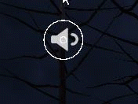
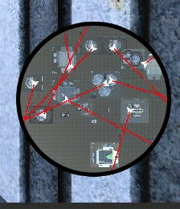
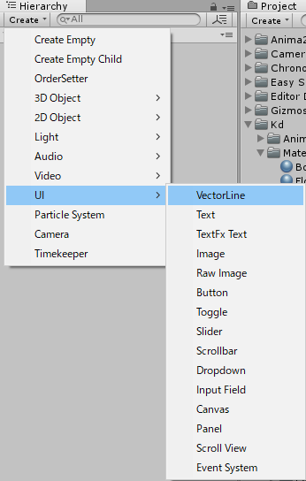
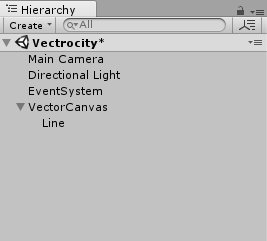
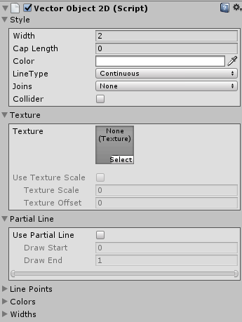

Vectrosityを使ってUGUI上で線や円のアニメーションをする
Vectrosity
アセットストアで販売されているVectrosity - Asset Storeを使うと、UGUI上に線や円といった図形を描画することができます。
今回はVectrosityを使ってアニメーションを作成します。
例えば、以下のように円の大きさを変えてみたり、

線の終点を変えてレーダーのような表現といったことができます。

ちなみにUGUI上に線や円を描くのに「uGUI でプリミティブな図形を描画できる「UIGraphicAPI」紹介」にあるようにGithubで公開されているものもあります。最初これを使っていたのですが、アニメーションしようとするとパフォーマンスがすごい落ちるのでVectrosityに変えました。
Vectrosityのオブジェクトを作る
アセットをインポートしたら、Create->UI->VectorLineでオブジェクトを作成できます。

作成するとCanvasが作られ、中にLineオブジェクトが作られます。Canvasは普通のUGUIのCanvasなのでここで重要なのはLineの方です。

LineオブジェクトにはVectorObject2Dコンポーネントがついていて、これをいじって線にしたり円にしたりアニメーションしたりします。スクリプト側からいじりますが、線の太さや色などデフォルトで決めておきたい場合は設定しておいても良いです。

円のアニメーション
小さい円からだんだん大きくなる円をつくります。
以下のソースコードで示すとおりです。
using System.Collections.Generic;
using UnityEngine;
using Vectrosity;
public class MakeCircle : MonoBehaviour {
VectorObject2D line;
void Start() {
var points = new List<Vector2>();
//20は円の頂点の数。多くすればよりなめらかになる。
//ここでは位置を考えずに頂点を作成するだけ。
for (var i = 0; i < 20; i++) {
points.Add(Vector2.zero);
}
line = GetComponent<VectorObject2D>();
//VectorObject2d.vectorLineが線の情報を持つ本体。頂点情報をここで代入
line.vectorLine.points2 = points;
}
void Update() {
//MakeCircleの引数は、原点、半径、頂点数。頂点数は上で作成した数-1を指定する
line.vectorLine.MakeCircle(Vector3.zero, Time.time * 10, line.vectorLine.points2.Count - 1);
//再描画
line.vectorLine.Draw();
}
}
線のアニメーション
線に関しては頂点の位置を自由に変えればいいだけなので、特に書くことはない。
デフォルトで頂点は2つ作られているので以下のようにすれば線は引ける。
lLine.vectorLine.points2[0] = new Vector2(0, 0);
line.vectorLine.points2[1] = new Vector2(100, 100);
line.vectorLine.Draw();